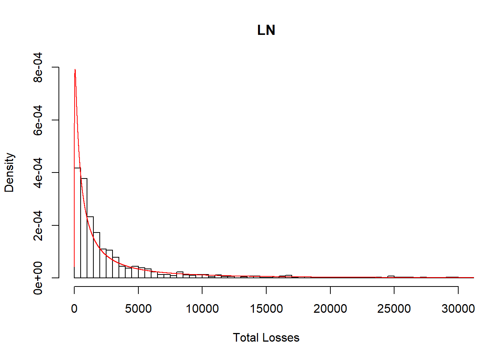
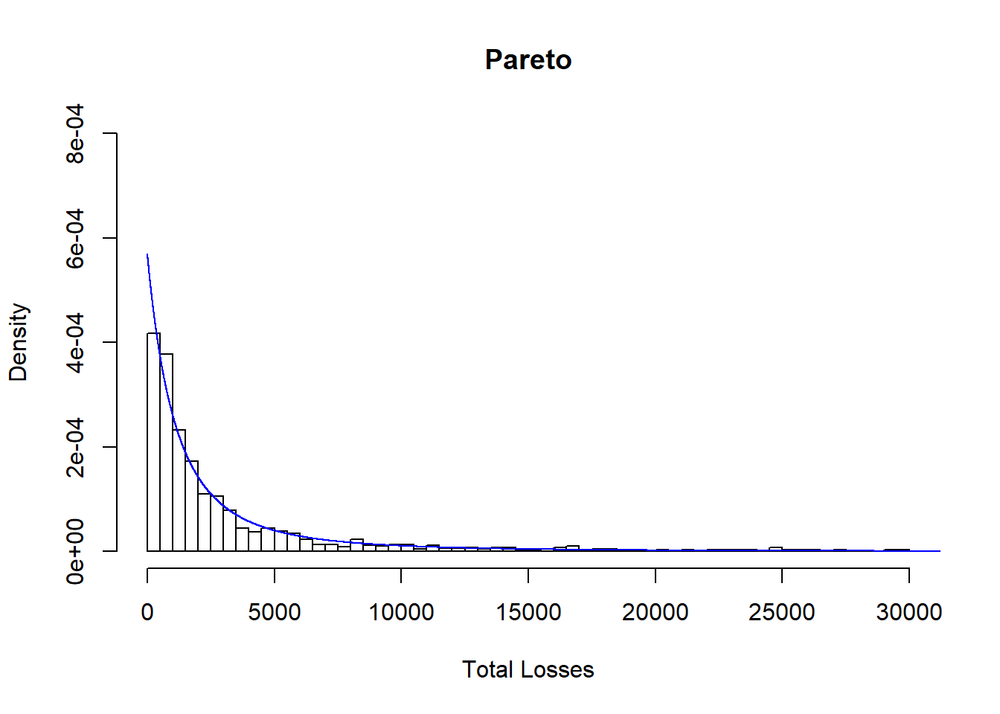
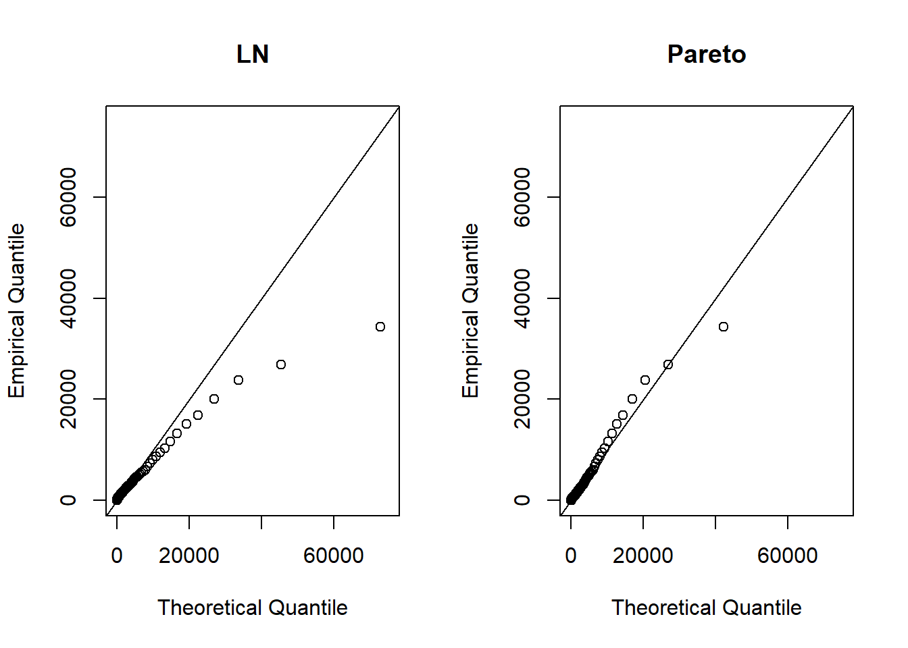

sev.dat <- subset(dat,Loss>0)
dim(sev.dat)[1] 2233 6You may have to install the package “VGAM” to run this code.
library(VGAM)
fit.LN <- vglm(Loss ~ 1, family=lognormal, data = sev.dat)
summary(fit.LN)
Call:
vglm(formula = Loss ~ 1, family = lognormal, data = sev.dat)
Pearson residuals:
Min 1Q Median 3Q Max
meanlog -4.1427 -0.4450 0.05912 0.5917 2.254
loge(sdlog) -0.7071 -0.6636 -0.51680 -0.1437 11.428
Coefficients:
Estimate Std. Error z value Pr(>|z|)
(Intercept):1 7.16870 0.03662 195.76 <2e-16 ***
(Intercept):2 0.54838 0.01496 36.65 <2e-16 ***
---
Signif. codes: 0 '***' 0.001 '**' 0.01 '*' 0.05 '.' 0.1 ' ' 1
Number of linear predictors: 2
Names of linear predictors: meanlog, loge(sdlog)
Log-likelihood: -20400.73 on 4464 degrees of freedom
Number of iterations: 3 Coefficients (note scale parameter is in log scale).
coef(fit.LN) (Intercept):1 (Intercept):2
7.1687024 0.5483791 Confidence intervals for model parameters.
confint(fit.LN, level=0.95) 2.5 % 97.5 %
(Intercept):1 7.0969291 7.2404757
(Intercept):2 0.5190507 0.5777076Loglikelihood for lognormal.
logLik(fit.LN) [1] -20400.73AIC for lognormal.
AIC(fit.LN) [1] 40805.47BIC for lognormal.
BIC(fit.LN) [1] 40816.89Covariance matrix for model parameters.
vcov(fit.LN) (Intercept):1 (Intercept):2
(Intercept):1 0.001341004 0.000000000
(Intercept):2 0.000000000 0.000223914Here we estimate sigma directly instead of in log scale.
loglikLN<-function(parms){
mu=parms[1]
sigma=parms[2]
llk <- -sum(log(dlnorm(sev.dat$Loss, mu, sigma)))
llk
}
ini.LN <- c(coef(fit.LN)[1],exp(coef(fit.LN)[2]))
zop.LN <- nlminb(ini.LN,loglikLN,lower=c(-Inf,1e-6),upper=c(Inf,Inf))
print(zop.LN)$par
(Intercept):1 (Intercept):2
7.168702 1.730446
$objective
[1] 20400.73
$convergence
[1] 0
$iterations
[1] 1
$evaluations
function gradient
2 2
$message
[1] "relative convergence (4)"library(numDeriv)
est <- zop.LN$par
names(est) <- c("mu","sigma")
hess<-hessian(loglikLN,est)
se <-sqrt(diag(solve(hess)))
print(cbind(est,se)) est se
mu 7.168702 0.03661961
sigma 1.730446 0.02589397You may have to install the package “VGAM” to run this code.
library(VGAM)
fit.pareto <- vglm(Loss ~ 1, paretoII, loc=0, data = sev.dat)
summary(fit.pareto)
Call:
vglm(formula = Loss ~ 1, family = paretoII, data = sev.dat, loc = 0)
Pearson residuals:
Min 1Q Median 3Q Max
loge(scale) -2.044 -0.7540 0.02541 0.8477 1.2958
loge(shape) -5.813 0.1526 0.36197 0.4322 0.4559
Coefficients:
Estimate Std. Error z value Pr(>|z|)
(Intercept):1 7.99629 0.08417 95.004 <2e-16 ***
(Intercept):2 0.52653 0.05699 9.239 <2e-16 ***
---
Signif. codes: 0 '***' 0.001 '**' 0.01 '*' 0.05 '.' 0.1 ' ' 1
Number of linear predictors: 2
Names of linear predictors: loge(scale), loge(shape)
Log-likelihood: -20231.91 on 4464 degrees of freedom
Number of iterations: 5 head(fitted(fit.pareto)) [,1]
[1,] 1502.569
[2,] 1502.569
[3,] 1502.569
[4,] 1502.569
[5,] 1502.569
[6,] 1502.569coef(fit.pareto) #note both parameters are in log scale(Intercept):1 (Intercept):2
7.9962932 0.5265276 exp(coef(fit.pareto)) #estimate of parameters(Intercept):1 (Intercept):2
2969.928635 1.693043 confint(fit.pareto, level=0.95) #confidence intervals for model parameters 2.5 % 97.5 %
(Intercept):1 7.831327 8.1612593
(Intercept):2 0.414834 0.6382213logLik(fit.pareto) #loglikelihood for pareto[1] -20231.91AIC(fit.pareto) #AIC for pareto[1] 40467.83BIC(fit.pareto) #BIC for pareto[1] 40479.25vcov(fit.pareto) #covariance matrix for model parameters (Intercept):1 (Intercept):2
(Intercept):1 0.007084237 0.004453555
(Intercept):2 0.004453555 0.003247586Here we estimate alpha and theta directly to define the pareto density.
dpareto <- function(y,theta,alpha){
alpha*theta^alpha/(y+theta)^(alpha+1)
}
loglikP<-function(parms){
theta=parms[1]
alpha=parms[2]
llk <- -sum(log(dpareto(sev.dat$Loss,theta,alpha)))
llk
}
ini.P <- exp(coef(fit.pareto))
zop.P <- nlminb(ini.P,loglikP,lower=c(1e-6,1e-6),upper=c(Inf,Inf))
print(zop.P)$par
(Intercept):1 (Intercept):2
2969.928635 1.693043
$objective
[1] 20231.91
$convergence
[1] 0
$iterations
[1] 1
$evaluations
function gradient
1 2
$message
[1] "both X-convergence and relative convergence (5)"library(numDeriv)
est <- zop.P$par
names(est) <- c("theta","alpha")
hess<-hessian(loglikP,est)
se <-sqrt(diag(solve(hess)))
print(cbind(est,se)) est se
theta 2969.928635 248.24191162
alpha 1.693043 0.09590892prepare the display window parameters to properly fit the histograms
par(mfrow=c(1,2))hist(sev.dat$Loss,xlab="Total Losses",main="LN",breaks=100,freq=F,xlim=c(0,3e4),ylim=c(0,8e-4))
x <- seq(1,max(sev.dat$Loss),1)
mu <- zop.LN$par[1]
sigma <- zop.LN$par[2]
lines(x,dlnorm(x,mu,sigma),col="red")
hist(sev.dat$Loss,xlab="Total Losses",main="Pareto",breaks=100,freq=F,xlim=c(0,3e4),ylim=c(0,8e-4))
x <- seq(1,max(sev.dat$Loss),1)
theta <- zop.P$par[1]
alpha <- zop.P$par[2]
lines(x,dpareto(x,theta,alpha),col="blue")
qpareto <- function(p,theta,alpha){theta*((1-p)^(-1/alpha)-1)}
pct <- seq(0.01,0.99,0.01)
par(mfrow=c(1,2))
plot(qlnorm(pct,mu,sigma),quantile(sev.dat$Loss,probs=pct),
main="LN", xlab="Theoretical Quantile", ylab="Empirical Quantile",
xlim=c(0,7.5e4),ylim=c(0,7.5e4))
abline(0,1)
plot(qpareto(pct,theta,alpha),quantile(sev.dat$Loss,probs=pct),
main="Pareto", xlab="Theoretical Quantile", ylab="Empirical Quantile",
xlim=c(0,7.5e4),ylim=c(0,7.5e4))
abline(0,1)